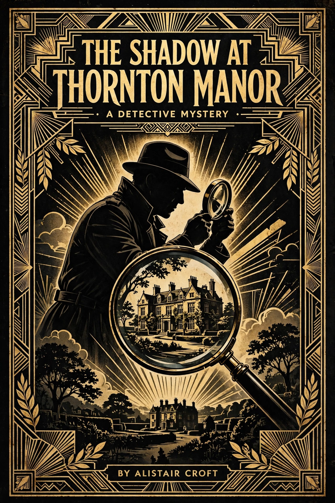

Mystery fiction

Mystery is a fiction genre where the nature of an event, usually a murder or other crime, remains mysterious until the end of the story. A detective, professional, amateur or retired, investigates and solves the puzzle, and the reader is invited to follow the clues — in the classic whodunit, to solve the case before the detective reveals the solution.
History
Edgar Allan Poe's C. Auguste Dupin stories, beginning with "The Murders in the Rue Morgue" (1841), established the template; Wilkie Collins's The Moonstone (1868) and Arthur Conan Doyle's Sherlock Holmes stories (from 1887) popularised the form. The interwar "Golden Age" of detective fiction — Agatha Christie, Dorothy L. Sayers, Margery Allingham and Ngaio Marsh, the "Queens of Crime" — codified fair-play rules (formalised by Ronald Knox and S. S. Van Dine) and devices such as the locked-room mystery and the least-likely suspect.
Subgenres
Beyond the classic whodunit lie the hardboiled private-eye novel (Dashiell Hammett, Raymond Chandler), the police procedural, the cozy mystery, legal and medical thrillers, and the inverted detective story. Mystery is closely related to, and frequently shelved with, crime fiction and the thriller, and it thrives across film, television and games as well as print.
See also: Detective fiction, Crime fiction, Agatha Christie